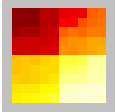

Die vorliegende Software dient der Darstellung von Kollaborationsprozessen in Wikis. Die Basis der Visualisierung stellen dabei sogenannte Ikonen oder Glyphen dar.

Jedes dieser grafischen Objekte repräsentiert eine Autorenbeziehung bzw. einen einzelnen Autor. Die Ikonen selbst setzen sich aus einzelnen Pixeln zusammen. Jeder Pixel steht dabei für genau einen Datenwert. Die Höhe des Wertes wird durch die Farbe des Pixels ausgedrückt.
Sinn dieser Darstellung ist es, auf kompaktem Raum möglichst viele Informationen darzustellen. Im wesentlichen habe Sie als Nutzer drei Möglichkeiten, die Visualisierung zu verändern: Sie können die Anordnung der Glyphen variieren, die der Pixel und die Farbgebung. Darüberhinaus lassen sich weitere Einstellungen treffen, die in dieser Hilfe erläutert werden.